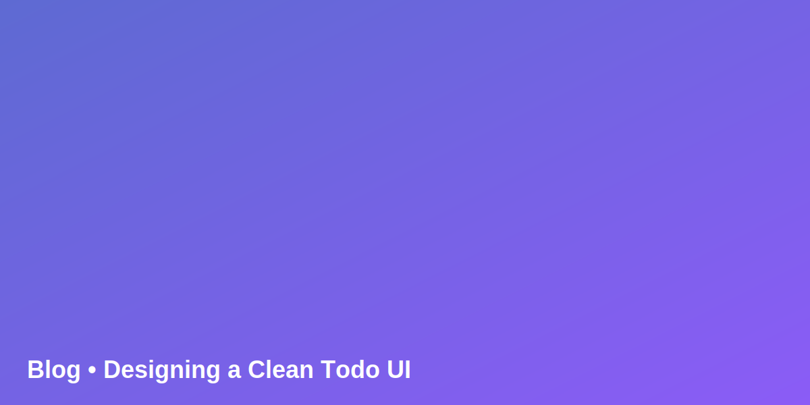

Designing a Clean Todo UI
Notes on list density, empty states, and feedback cues. Keep actions visible and reduce friction.

Training project: UI Design • Front-End Web Development course.
I design clean UIs, fast experiences, and accessible components. Comfortable with HTML, CSS, JS, and modern UI tooling.
TAREK — Front-End learner with a back-end background. Interested in UI design systems, component libraries, and performance. This portfolio demonstrates the required sections (About, Projects, Blog, Contact) with a hi-fi layout you can submit.
Notes on list density, empty states, and feedback cues. Keep actions visible and reduce friction.
A quick path to hi-fi: define hierarchy, set type scale, then apply the brand palette.